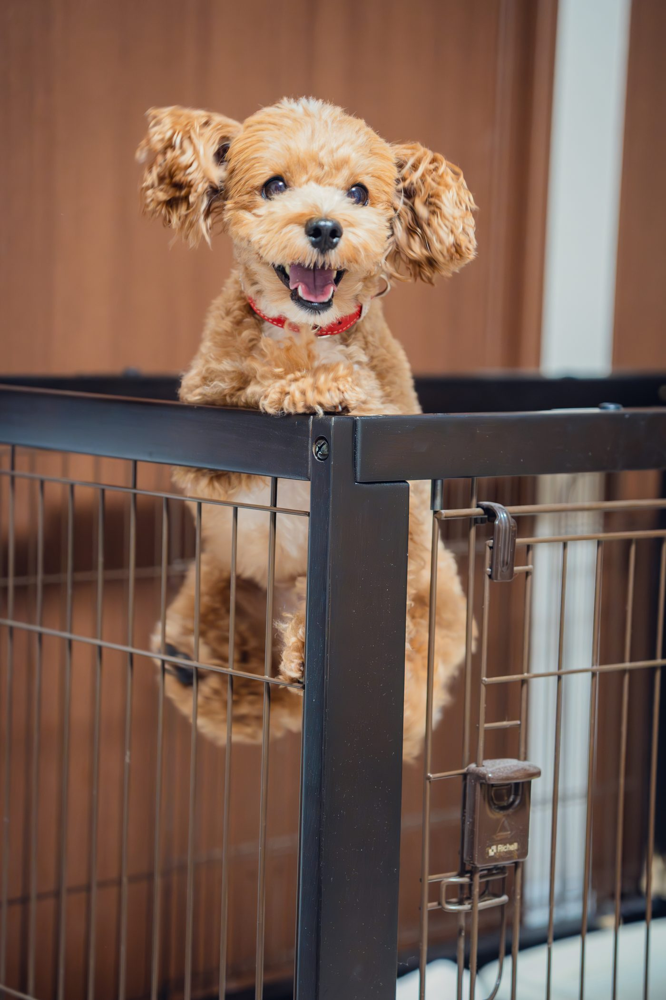
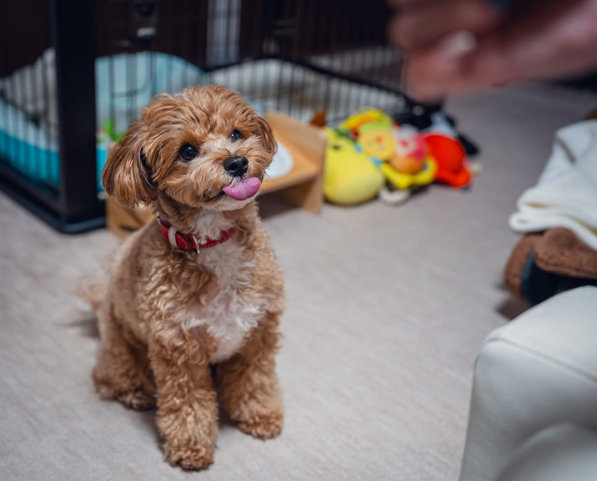
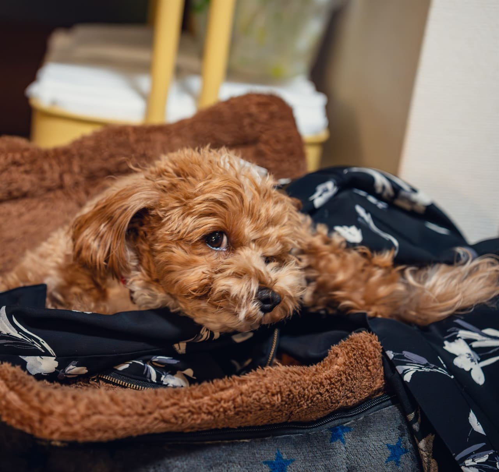
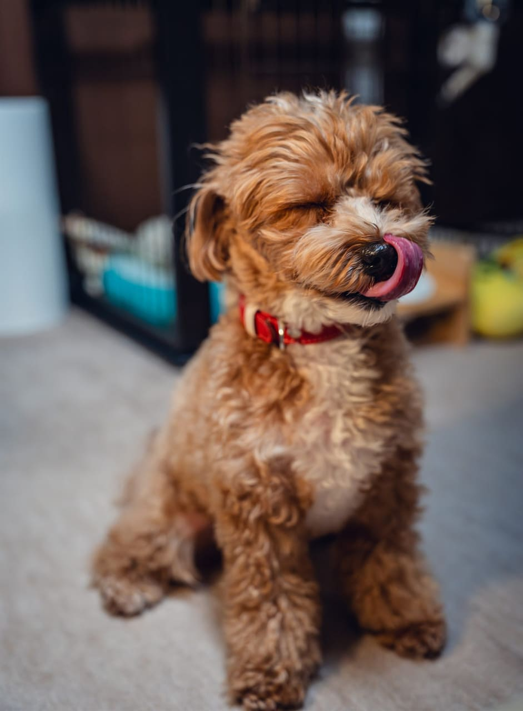
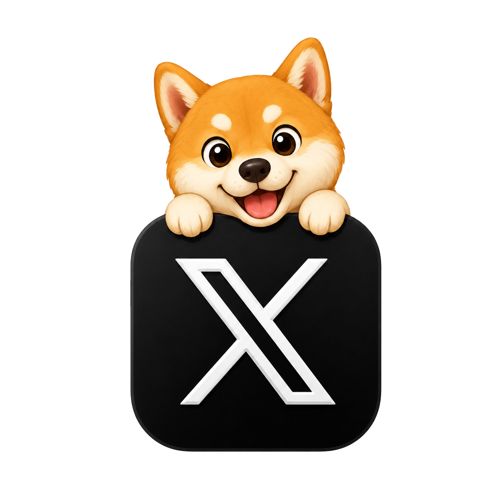
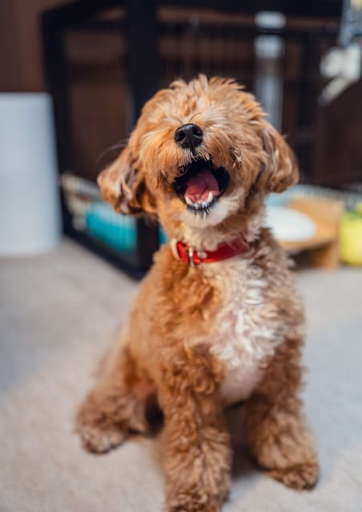

a.玄関、ご挨拶
玄関でゆっくり、リードのまま少しご挨拶。今日はすぐにごろん。
9:12 — 9:30♥
朝のお散歩から、お昼寝、おやつ、お迎えまで。
1 日の様子を、写真と一言メモで LINE にお返しします。これが「通い帳」のはじまりです。
— 架空サンプル HP です。実在店舗・実在事例ではありません。

お預かり中の 1 日を、4 つのメモにして LINE にお返しします。
急がず、その子のペースに合わせて。写真は撮影日のもので、毎日内容は変わります。
玄関でゆっくり、リードのまま少しご挨拶。今日はすぐにごろん。

気持ちのいい木陰でひと休み。お水もしっかり飲めました。

ふだんのごはんを完食。お薬もちゃんと飲めました。

今日のごきげん、メモにして LINE でお返しします。

※ 架空サンプルのSNS表示例です（リンク先はありません）
怖がりさん、シニアさん、お薬がある子。
気になることをチェックいただけたら、お預かり前に LINE で確認させていただきます。
店主は元・動物看護師。お薬対応・シニア対応の経験があり、近くに動物病院もあるため、もしものときも安心していただけます。
お試しのお預かり中の様子も、ちゃんと「通い帳」でお返しします。ご家族の判断材料に。
1 日 4 頭までの少人数制。短いお預かりも、お泊まりも、まずは LINE でご相談ください。
送迎は +¥1,000 / 片道（武蔵野市内）／投薬対応は 追加なし。
連泊割引・多頭割引もあります。詳しくは LINE でお気軽にどうぞ。
「はじめてだから、ちゃんと聞きにくい」をなくしたくて、よくいただくご相談を四つだけ並べました。
合わないかも、と思った時点で構いません。LINE で続きをお聞かせください。
はい。まずは 犬種・年齢・性格・預けたい時間帯を LINE でお知らせください。お預かりに不安がある場合は、初回 30 分の面談（無料）を先に行うこともできます。
はい。お写真 1 枚と、ご家族の気になっていることを一言いただければ、その子に合う形を LINE でお返しします。「うちの子なんですけど…」だけで構いません。
このページの「料金」セクションに、半日・1 日・お泊まり・トリミングの基準額を載せています。送迎・投薬・キャンセル規定など、迷いやすいものはまとめてあります。具体的なお見積もりは LINE で。
いいえ。これは MISERU が作成した架空のペットサービス HP サンプルです。「うちのこ通い帳」というお店は実在しません。掲載写真は見せ方サンプルで、実在事例ではありません。
「どこにあるか」より先に、
「行きやすいか」「相談しやすいか」が見えると、はじめての方も声をかけやすくなります。
住所だけでなく、駅からの所要時間と道のりがあると安心。
車で送り迎えしたい方には「駐車場あり / 近隣コインパ」が伝わるだけで違います。
送迎範囲・時間帯・追加費用。ここが書かれていると相談のハードルが下がります。
LINE / 電話 / 来店 のどれから始めればいいか、最初の一歩を書く。
— このセクションは 「行きやすさ」を書く場所のサンプルです。実際の HP では、お店の住所・駅・駐車場・送迎の有無を、ここに具体的に置きます。
「うちの子なんですけど、◯◯で…」のメッセージと、お写真 1 枚。
これだけで、合うコースとお見積りを当日中に LINE でお返しします。
はじめての方も、はじめての場所が苦手な子も、無理に押し売りはしません。
※ LINE ボタンはすべて MISERU 公式 LINE につながります（架空店舗の連絡先ではありません）。

— このサンプルでは、かわいさだけでなく「預ける前の不安」が減るように、通い帳・料金・相談導線を整理しています。
このサンプルでMISERUがやったこと：構成の設計／写真の選定とトリミング／全文章の執筆／スマホ最適化／LINE相談までの導線設計。あなたのHPで同じ範囲をやるなら、撮影込みの STANDARD（¥298,000〜）相当の作業です。
MISERU は中小事業の Web を「整える編集室」。無料相談では、今の HP・Instagram を見て、方向性と合いそうな進め方・プラン目安までお返しします。具体的な改善案・写真選定・文章案・レイアウト案・ラフは、初回見立てシート（¥9,800〜）から対応します。